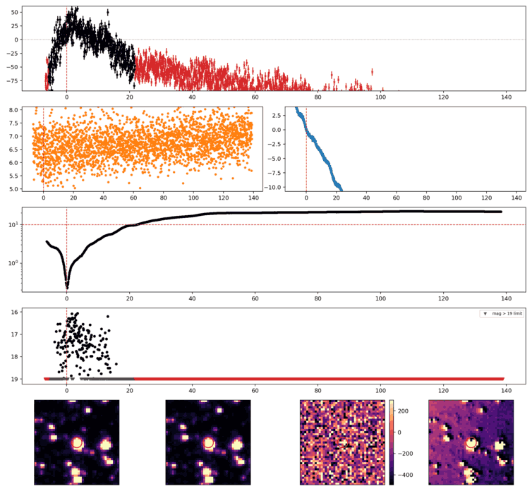
Search centered on refined position (23.8792981, +31.9124457 deg). Gaia coordinates are at J2016.0; proper motions are shown, without epoch propagation. A positional match does not change the candidate flags.
No Gaia DR3 sources found within 5 arcseconds.
Retrieved 2026-10-22T18:26:19.706897+00:00
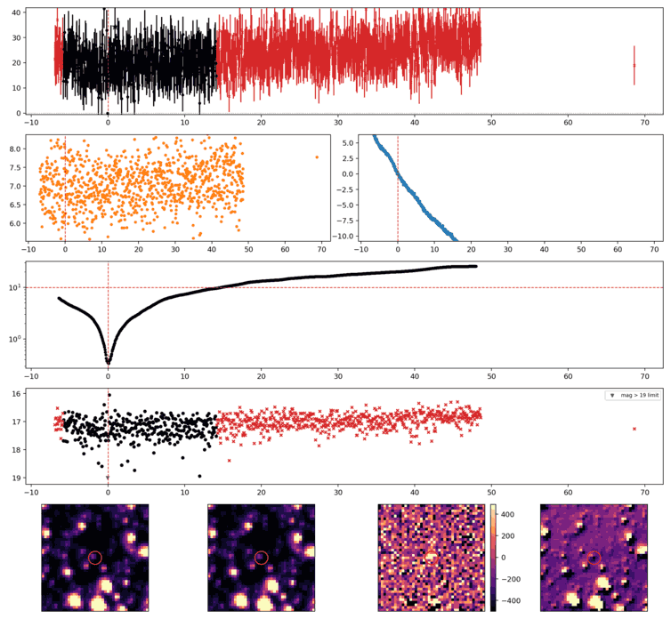
Search centered on refined position (3.7489137, +56.8226695 deg). Gaia coordinates are at J2016.0; proper motions are shown, without epoch propagation. A positional match does not change the candidate flags.
No Gaia DR3 sources found within 5 arcseconds.
Retrieved 2026-10-22T18:26:20.464960+00:00
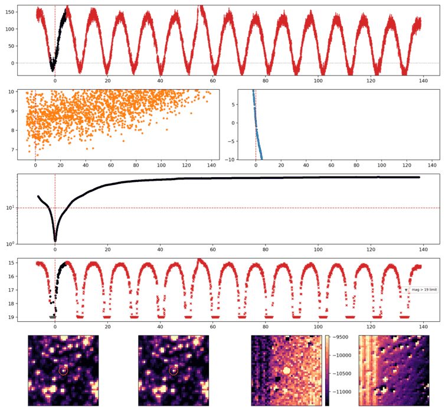
Search centered on refined position (341.2885009, +64.2978106 deg). Gaia coordinates are at J2016.0; proper motions are shown, without epoch propagation. A positional match does not change the candidate flags.
| Source ID / catalog entry | Separation (arcsec) | RA (deg) | Dec (deg) | G (mag) | BP (mag) | RP (mag) | Parallax ± error (mas) | PM RA* ± error (mas/yr) | PM Dec ± error (mas/yr) | RUWE | Variability |
|---|---|---|---|---|---|---|---|---|---|---|---|
| 2211333392037634304 | 1.322 | 341.2886070 | 64.2974463 | 13.634 | 14.213 | 12.900 | 3.872 ± 0.010 | 7.350 ± 0.012 | 10.111 ± 0.011 | 0.858 | VARIABLE |
Retrieved 2026-10-22T18:26:21.246550+00:00
Representative chosen by category, detection count, then Gaussian S/N. Original measurements and classifications are retained below.
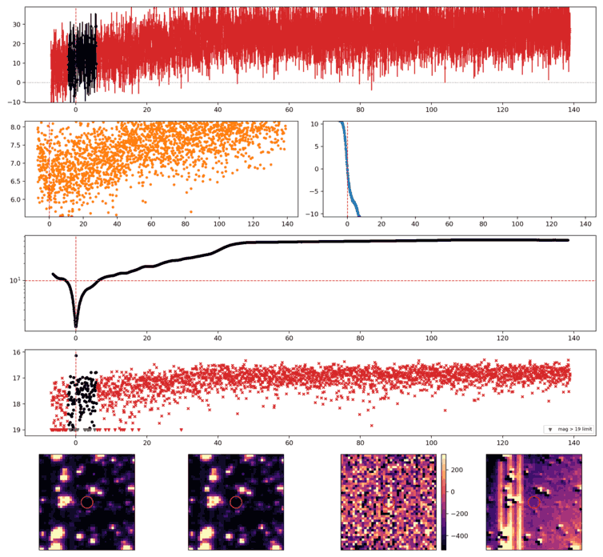
Search centered on refined position (28.1331523, +30.4015773 deg). Gaia coordinates are at J2016.0; proper motions are shown, without epoch propagation. A positional match does not change the candidate flags.
No Gaia DR3 sources found within 5 arcseconds.
Retrieved 2026-10-22T18:26:22.005253+00:00
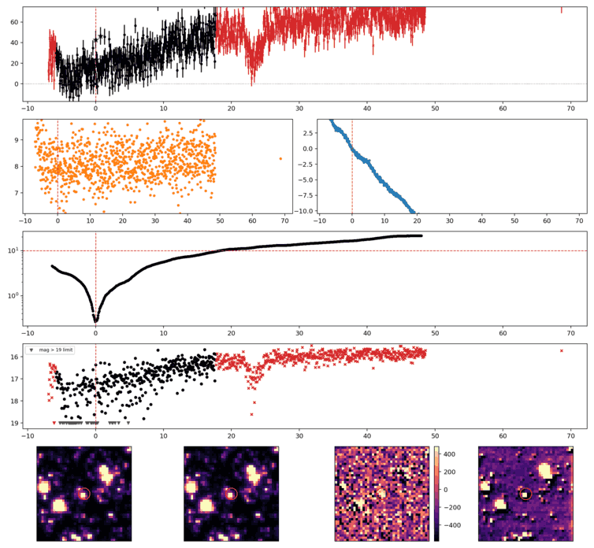
Search centered on refined position (15.1506772, +55.6851548 deg). Gaia coordinates are at J2016.0; proper motions are shown, without epoch propagation. A positional match does not change the candidate flags.
No Gaia DR3 sources found within 5 arcseconds.
Retrieved 2026-10-22T18:26:22.802332+00:00
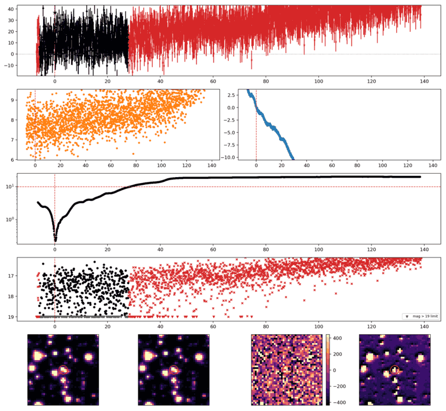
Search centered on refined position (41.7814952, +37.4530561 deg). Gaia coordinates are at J2016.0; proper motions are shown, without epoch propagation. A positional match does not change the candidate flags.
No Gaia DR3 sources found within 5 arcseconds.
Retrieved 2026-10-22T18:26:23.575624+00:00
Representative chosen by category, detection count, then Gaussian S/N. Original measurements and classifications are retained below.
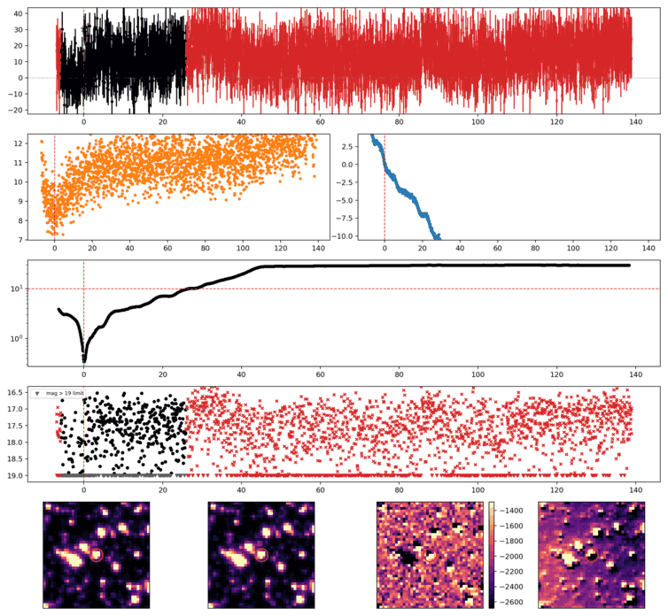
Search centered on refined position (33.6825530, +52.3462090 deg). Gaia coordinates are at J2016.0; proper motions are shown, without epoch propagation. A positional match does not change the candidate flags.
No Gaia DR3 sources found within 5 arcseconds.
Retrieved 2026-10-22T18:26:24.348483+00:00
Representative chosen by category, detection count, then Gaussian S/N. Original measurements and classifications are retained below.
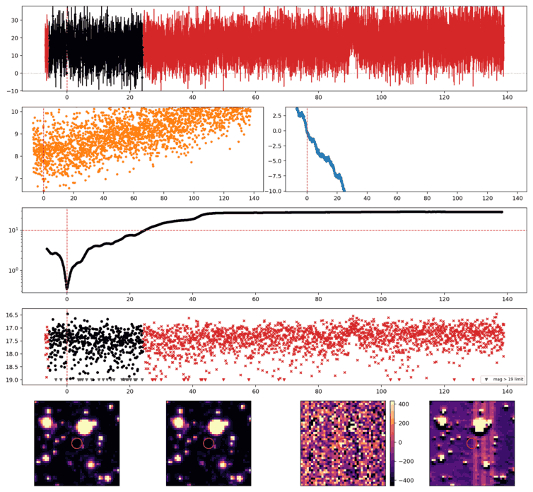
Search centered on refined position (38.4202826, +34.2897838 deg). Gaia coordinates are at J2016.0; proper motions are shown, without epoch propagation. A positional match does not change the candidate flags.
No Gaia DR3 sources found within 5 arcseconds.
Retrieved 2026-10-22T18:26:25.105304+00:00
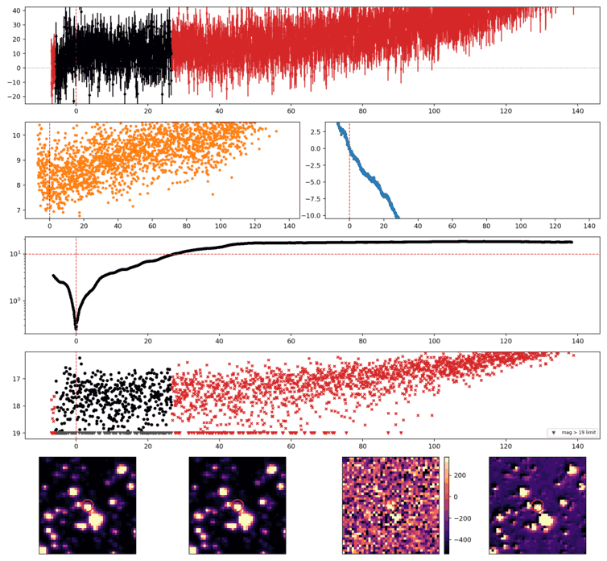
Search centered on refined position (46.2414554, +39.5101252 deg). Gaia coordinates are at J2016.0; proper motions are shown, without epoch propagation. A positional match does not change the candidate flags.
| Source ID / catalog entry | Separation (arcsec) | RA (deg) | Dec (deg) | G (mag) | BP (mag) | RP (mag) | Parallax ± error (mas) | PM RA* ± error (mas/yr) | PM Dec ± error (mas/yr) | RUWE | Variability |
|---|---|---|---|---|---|---|---|---|---|---|---|
| 142934729201855744 | 2.751 | 46.2404884 | 39.5102912 | 11.735 | 11.766 | 10.910 | 3.914 ± 0.223 | 19.851 ± 0.250 | -31.132 ± 0.193 | 11.930 | NOT_AVAILABLE |
Retrieved 2026-10-22T18:26:25.905231+00:00
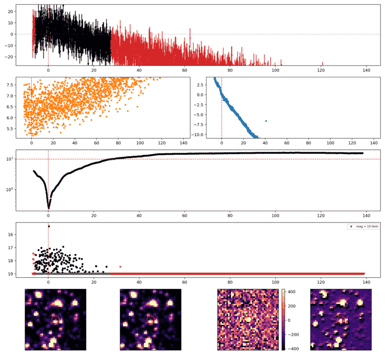
Search centered on refined position (308.9632085, +62.9878661 deg). Gaia coordinates are at J2016.0; proper motions are shown, without epoch propagation. A positional match does not change the candidate flags.
No Gaia DR3 sources found within 5 arcseconds.
Retrieved 2026-10-22T18:26:26.672897+00:00
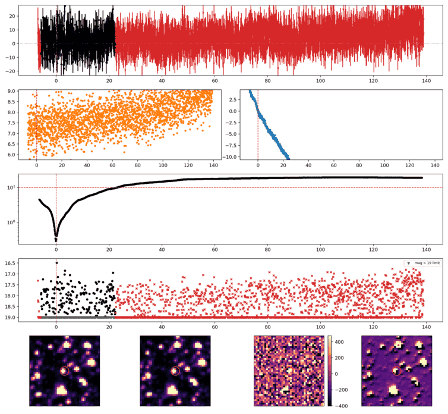
Search centered on refined position (315.3336584, +62.6149239 deg). Gaia coordinates are at J2016.0; proper motions are shown, without epoch propagation. A positional match does not change the candidate flags.
No Gaia DR3 sources found within 5 arcseconds.
Retrieved 2026-10-22T18:26:27.446351+00:00
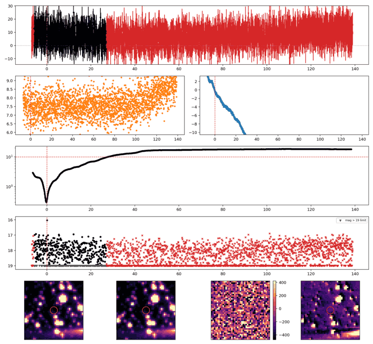
Search centered on refined position (31.3277376, +42.3872875 deg). Gaia coordinates are at J2016.0; proper motions are shown, without epoch propagation. A positional match does not change the candidate flags.
No Gaia DR3 sources found within 5 arcseconds.
Retrieved 2026-10-22T18:26:28.215610+00:00
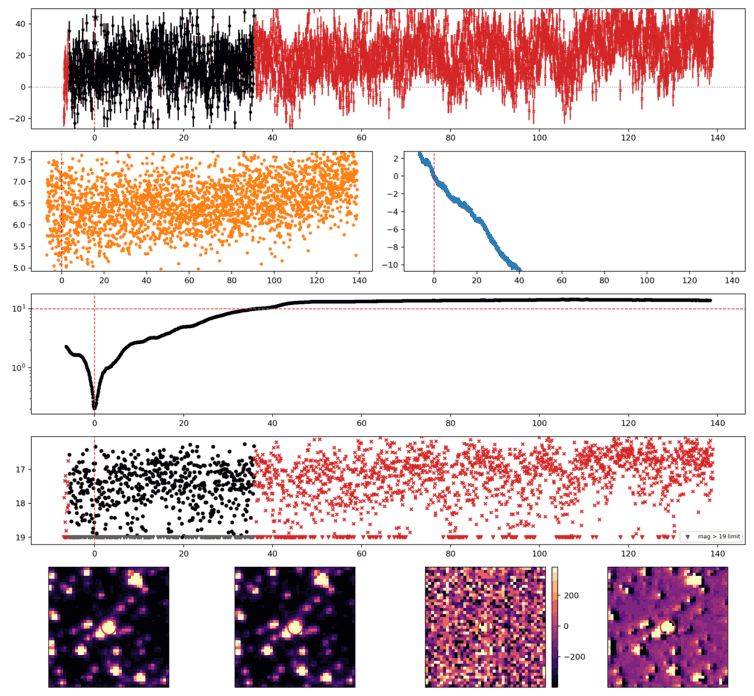
Search centered on refined position (19.8757400, +39.3167061 deg). Gaia coordinates are at J2016.0; proper motions are shown, without epoch propagation. A positional match does not change the candidate flags.
No Gaia DR3 sources found within 5 arcseconds.
Retrieved 2026-10-22T18:26:29.024330+00:00
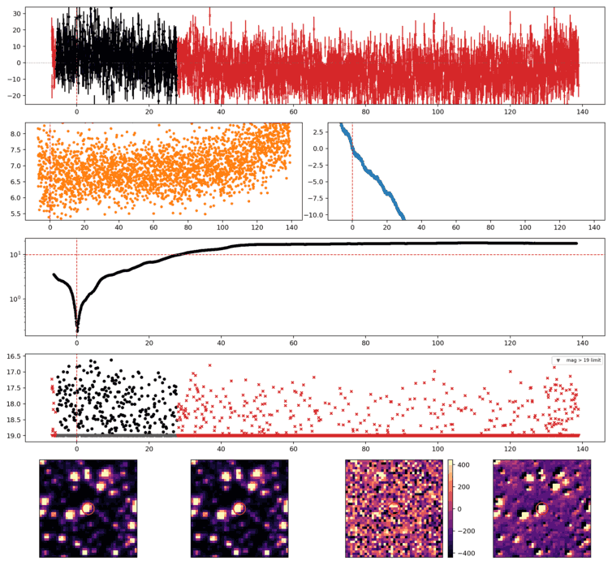
Search centered on refined position (43.2393777, +42.2928689 deg). Gaia coordinates are at J2016.0; proper motions are shown, without epoch propagation. A positional match does not change the candidate flags.
No Gaia DR3 sources found within 5 arcseconds.
Retrieved 2026-10-22T18:26:29.789755+00:00
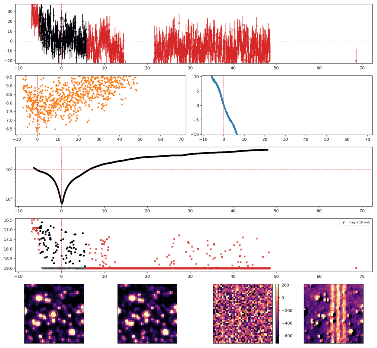
Search centered on refined position (9.2670214, +52.9934938 deg). Gaia coordinates are at J2016.0; proper motions are shown, without epoch propagation. A positional match does not change the candidate flags.
No Gaia DR3 sources found within 5 arcseconds.
Retrieved 2026-10-22T18:26:30.569200+00:00